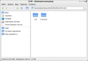

Userboky
Userboky Добро пожаловать, Гость.
Пожалуйста, войдите или зарегистрируйтесь.
Не получили письмо с кодом активации?
« предыдущая тема следующая тема »
Userboky
« Ответ #30 : 29.04.2010 11:53:50 »
Предлагаю следующее решение:
1.Устанавливаем fuse-smb
2.Создаём папку, к которой будет монтироваться наше "Сетевое окружение":
~/Network, делаем для неё полный доступ всем
3.Создаём папку для кофигурации samba и fuse-smb:
~/.smb
4.Создаём файл конфигурации для Samba, чтобы была корректная работа с русскими буквами: /home/user/.smb/smb.conf
[global]
dos charset = CP866
display charset = LOCALE
unix charset = UTF8
workgroup = WORKGROUP
#netbios name = username
log file = /home/user/samba/log/log.%m
max log size = 50
5. Создаём файл конфигурации fusesmb.conf: /home/user/.smb/fusesmb.conf
[global]
username=username
password=userpassword
showhiddenshares=true
timeout = 10
interval = 5
Параметры username и password очень важны, если документы находятся на сервере Linux. Происходит подключение к серверу именно с этими параметрами!
6.Проверяем результаты первого этапа, запустив fuse-smb и просмотрев список имеющихся в локальной сети рабочих групп и доменов:
$fusesmb /home/user/Network
$ls /home/user/Network (или смотрим в thunar)
Мы видим, что всё получилось и можно посмотреть содержимое сети, и открыть файлы из расшаренных папок WIN машин.
7.Добавляем в группу fuse (etc/group) пользователя user
8.Делаем автозапуск службы fusesmb средствами SL:
Пуск-Настройки-Сеансы и запуск
Открываем закладку «Автозапуск приложений »-Добавить
Имя — fusesmb (к примеру)
Описание — Сетевое окружение (к примеру)
Команда — fusesmb /home/user/Network
Сохраняем
ПЕРЕЗАГРУЖАЕМСЯ
Открываем Thunar, вытаскиваем на левую панель ссылки к нужным ресурсам и радуемся (см рисунок). Данная схема наиболее подходит для офиса при переходе от Win к Linux (что я и собираюсь осуществить).

Снимок экрана.png (40.38 кБ, 760x529 - просмотрено 1064 раз.)
« Последнее редактирование: 29.04.2010 11:59:29 от Userboky »
Записан